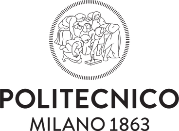

Landscape and Infrastructure Design Studio 2022-2023

| 2022-now | Politecnico di Milano | Master: Landscape Architecture-Land Landscape Heritage |
| 2017-2021 | Chung Yuan Christian University, Taiwan, College of Design | Bachelor: Landscape Architecture |
| 2022-now | Politecnico di Milano | Master: Landscape Architecture-Land Landscape Heritage |
| 2018-2022 | Università IUAV di Venezia(Ve) | Bachelor: Architecture, Techniques and Cultures of Design |
| 2022-now | Politecnico di Milano | Master: Landscape Architecture-Land Landscape Heritage |
| 2015-2020 | Amity University, Lucknow | Bachelor: Architecture |
| 2022-now | Politecnico di Milano | Master: Landscape Architecture-Land Landscape Heritage |
| 2018-2022 | Tsinghua University, Beijing | Bachelor: Landscape Architecture |

| 2018-now | Personal assistant | |
| 2014-2018 | Primary School of Cats |